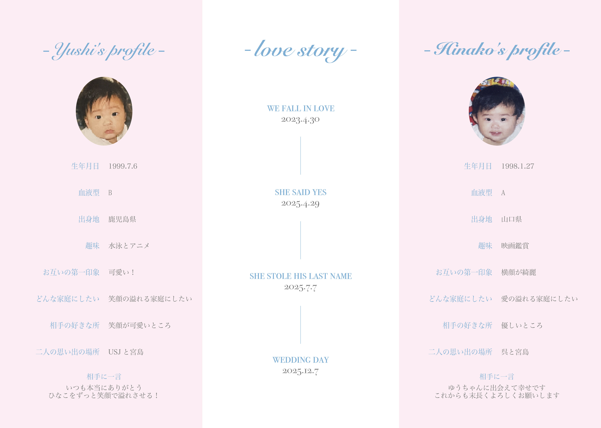

プロフィールブック2
プロフィール＆ラブストーリー

Overview
- 課題制作 制作全般
- 制作時期：2025年 11月
- 使用ツール：Illustrator
Concept
二人の出会いから結婚までの歩みを整理して伝えるページとして制作しました。 左右に新郎新婦それぞれのプロフィール、中央に年表を配置することで、視線の流れが自然に物語へと向かう構成にしています。 淡い配色と余白を活かし、情報量が多くても落ち着いて読めるデザインを意識しました。 全体のトーンを統一し、やさしく上品な印象にまとめています。